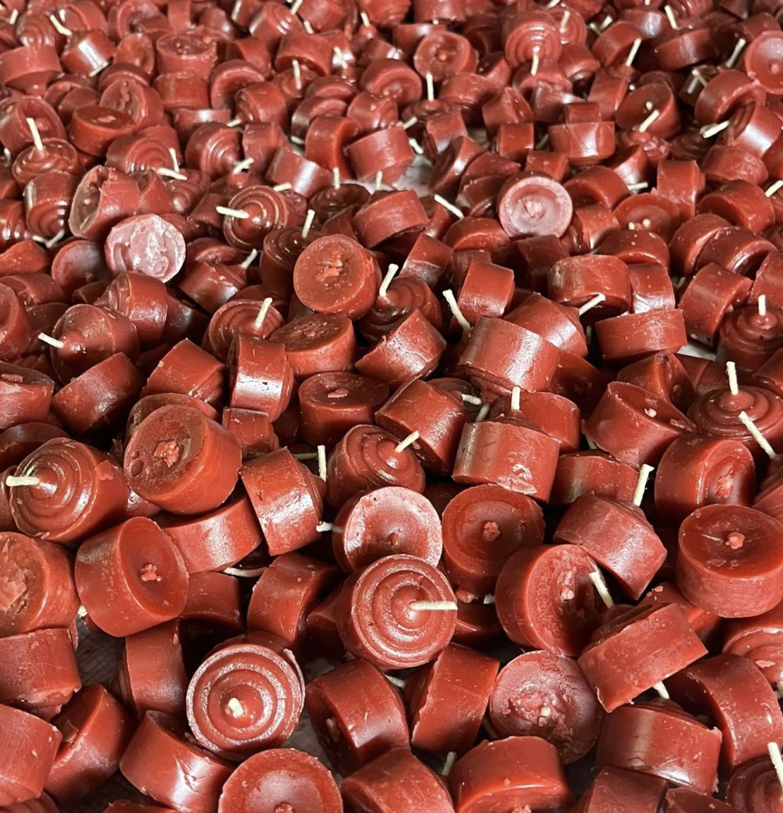

<main id="main">
  <div class="about-main about-body">
    <hr class=".about-hr ">
    <div class="ceo-section">
      <div class="ceo-image">
        
      </div>
      <div class="ceo-details">
        <h4>CEO</h4>
        <h2>Alexander Tuliao</h2>
        <p>
          Holy Candle Factory, which was established in the 1970s and was located in Purok Mahogany 2, Poblacion, Liloan, specialized in handcrafted candles for chapels and churches across the Philippines. It offered a wide variety of devotional candles, including vigil glass candles, liwanag light candles, and its best-selling offering lights. Supplying both local and national churches—from Cebu to Manila—it was committed to quality, tradition, and timely service.
        </p>
      </div>
    </div>
  </div>


  <!-- <script>
    function toggleMenu() {
      const nav = document.getElementById('mobileMenu');
      nav.classList.toggle('show');
    }


    function updateClassesBasedOnWidth() {
    const main = document.querySelector('.main');
    const menu = document.getElementById('mobileMenu');

    if (window.innerWidth <= 768) {
      main && main.classList.remove('main');
      menu && menu.classList.remove('menu');
    } else {
      if (main && !main.classList.contains('main')) main.classList.add('main');
      if (menu && !menu.classList.contains('menu')) menu.classList.add('menu');
    }
  }

  // Run on initial load
  updateClassesBasedOnWidth();

  // Run whenever the window is resized
  window.addEventListener('resize', updateClassesBasedOnWidth);
  </script> -->

</main>
<!-- </html> -->
